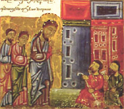
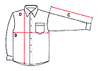
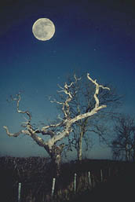

-
...
Lord Marshmoreton era el jardinero amateur más entusiasta en una tierra de entusiastas jardineros amateurs. Vivía para su jardín. El amor que otros hombres dedican a sus familiares más allegados, Lord Marshmoreton lo prodigaba a semillas, rosas y suelos abonados. El odio que ciertos miembros de su clase sienten por los Socialistas y los Demagogos, Lord Marshmoreton lo reservaba para los gusanos de las rosas, los pulgones, y ese insecto blanco amarillento cuyo carácter es tan siniestro y depravado que va por la vida con un alias –haciéndose llamar a veces langosta de las rosas y a veces trips. Un alma simple, la de Lord Marshmoreton: mansa y placentera. Pero pónganlo cerca de un trips, y se volverá un dispensador de muerte y exterminio, un destructor de la talla de Atila y Gengis Khan. Los trips se alimentan del reverso de las hojas, succionando su jugo y tornándolas amarillentas; y los puntos de vista de Lord Marshmoreton sobre este hecho eran tan rígidos que habría embadurnado con aceite de ballena a su propia abuela si la hubiese encontrado succionando el jugo del reverso de las hojas de alguno de sus rosales...
P. G. Wodehouse
A damsel in distress
Para no perderse: en los ciclos de cine del Teatro San Martín, parece que viene uno dedicado a Robert Bresson. Todavía no está la programación (la cosa es del 10 al 22 de julio). Pero la anticipación no viene mal, para prepararse leyendo el "Diario de un cura rural" de Bernanos (y acaso también "Nueva historia de Mouchette" ... y "Crimen y castigo" !).
Me pasan la dirección de la página de mercaba.org -sitio que pese a la mala estética y al desorden tiene mucho material de interés-.
De allí extraigo parte del Sermón 88 de San Agustín (siglo V).
-

Cuando salían de Jericó, le siguió una gran muchedumbre.
En esto, dos ciegos que estaban sentados junto al camino, al enterarse que Jesús pasaba, se pusieron a gritar: «¡Señor, ten compasión de nosotros, Hijo de David!»
La gente les increpó para que se callaran, pero ellos gritaron más fuerte: «¡Señor, ten compasión de nosotros, Hijo de David!»
Entonces Jesús se detuvo, los llamó y dijo: «¿Qué queréis que os haga?»
Dícenle: «¡Señor, que se abran nuestros ojos!»
Movido a compasión Jesús tocó sus ojos, y al instante recobraron la vista; y le siguieron. (*)
¿Qué es, hermanos, gritar a Cristo, sino adecuarse a la gracia del Señor con las buenas obras? Digo esto, hermanos, porque no sea que levantemos mucho la voz, mientras enmudecen nuestras costumbres.
¿Quién es el que gritaba a Cristo, para que expulsase su ceguera interior al pasar Él, es decir, al dispensarnos los sacramentos temporales, con los que se nos induce a adquirir los eternos?
¿Quién es el que grita a Cristo? Quien desprecia el mundo, ése llama a Cristo. Quien desdeña los placeres del siglo, ése clama a Cristo.
Quien dice -no con la lengua sino con la vida- "el mundo está crucificado para mí, y yo para el mundo" (Gal 6, 14), ése es el que grita a Cristo.
Llama a Cristo quien reparte y da a los pobres, para que su justicia permanezca por los siglos de los siglos (cfr. Sal 101, 9).
El que escucha y no se hace el sordo (vended vuestras bienes y dad limosna; haceos bolsas que no envejecen, un tesoro que no se agota en el Cielo ; Lc 12, 33), como si oyese el sonido de los pasos de Cristo que pasa, clame
al igual que el ciego por estas cosas; es decir, hágalas realidad.
Su voz esté en sus hechos. Comience a despreciar el mundo, a distribuir sus posesiones al necesitado, a tener en nada lo que los hombres aman. Deteste las injurias, no apetezca la venganza, ponga la mejilla al que le hiere, ore por los enemigos; si alguien le quitare lo suyo, no lo exija; si, al contrario, hubiera quitado algo a alguien, devuélvale el cuádruplo.
Una vez que haya comenzado a obrar así, todos sus parientes, compañeros
y amigos se alborotarán. Quienes aman el mundo se le pondrán en contra:
«¿Qué haces, loco? ¡No te excedas!: ¿acaso los demás no son cristianos? Eso es idiotez, locura».
Cosas como ésta grita la turba para que los ciegos no clamen. La turba reprendía a los que clamaban, pero no tapaba sus clamores.
Comprendan cómo han de obrar quienes desean ser sanados.
También ahora pasa Jesús: los que están al costado
del camino, griten.
Al costado del camino están aquellos de corazón contrito a quienes dio órdenes el Señor.
En efecto, siempre que se nos leen las obras temporales
del Señor, se nos muestra a Jesús que pasa.
Porque hasta el fin de los siglos no faltarán ciegos sentados al costado
del camino. Es necesario que levanten su voz.
La muchedumbre que acompañaba al Señor reprendía el clamor de los que buscaban la salud.
Hermanos, ¿os dais cuenta de lo que digo? No sé de que modo decirlo, pero tampoco cómo callar. Esto es lo que digo, y abiertamente -temo a Jesús que pasa y se queda, y no puedo callarlo-: los cristianos malos y tibios obstaculizan a los buenos cristianos, a los verdaderamente llenos de celo y deseosos de cumplir los mandamientos de Dios, escritos en el Evangelio. La misma turba que está con el Señor, hace callar a los que claman; es decir, obstaculiza a los que obran el bien, no sea que con su perseverancia sean curados.
Mas clamen ellos, no se cansen ni se dejen arrastrar por la masa. No imiten siquiera a los que, cristianos desde antiguo, viven mal y sienten envidia de las buenas obras. No digan: «¡Vivamos como la gran multitud!». ¿Y por qué no como ordena el Evangelio? ¿Por qué quieres vivir conforme a la reprensión de la turba que impide gritar, y no según las huellas de Cristo que pasa?
Te insultarán, te vituperarán, te llamarán para que vuelvas atrás. Tú clama hasta que tu grito llegue a oídos de Jesús. Pues quienes perseveraren en obrar lo que ordenó Cristo, sin hacer caso de la muchedumbre que lo prohibe, y no se ensoberbecieren por el hecho de que parecen seguir a Cristo—esto es, por llamarse cristianos—, sino que tuvieren más amor a la luz que Cristo les ha de restituir que temor al estrépito de los que les prohiben; éstos en modo alguno se verán separados: Cristo se detendrá y los sanará...
Se acuerdan de aquello de las múltiples negaciones, de "no deje de faltar"... ?
Bueno, en Juegos de ingenio encontraron en un envoltorio de una farmacia otra muestra (ver imagen en el post del 25 de mayo):
"No evite ignorar los problemas escolares y personales de sus hijos".
Excelente.
-
... Quizá la ventaja más importante del conocimiento "inútil" es que favorece un estado mental contemplativo. Hay en el mundo demasiada facilidad, no sólo para la acción sin la adecuada reflexión previa, sino también para cualquier clase de acción en ocasiones en que la sabiduría aconsejaría la inacción.
La gente muestra sus inclinaciones en esta cuestión de varias curiosas maneras.
Mefistófeles dice al joven estudiante que la teoría es gris pero el árbol de la vida es verde, y todo el mundo cita esto como si fuera la opinión de Goethe en lugar de lo que éste suponía que era probable que dijera el diablo a un estudiante. Hamlet es tenido por una terrible advertencia contra el pensamiento sin acción, pero nadie tiene a Otelo como una advertencia contra la acción sin pensamiento. Los profesores como Bergson, por una especie de culto de moda al hombre práctico, condenan la filosofía y dicen que la vida, en su manifestación más elevada, debería parecerse a una carga de caballería.
Por mi parte, estimo que la acción es mejor cuando surge de una profunda comprensión del universo y del destino humano, y no de cualquier impulso salvajemente apasionado de romántica pero desproporcionada afirmación del yo.
El hábito de encontrar más placer en el pensamiento que en la acción es una salvaguarda contra el desatino y el excesivo amor al poder, un medio para conservar la serenidad en el infortunio y la paz de espíritu en las contrariedades. Es probable que, tarde o temprano, una vida limitada a lo personal llegue a ser insoportablemente dolorosa; sólo las ventanas que dan a un cosmos más amplio y menos inquietante hacen soportables los más trágicos aspectos de la vida. ...
¿Que los católicos argentinos no tenemos motivos para jactarnos, ante los católicos de otros lugares ? Cómo!
Fíjense la enjundia de la religiosidad criolla, que según afirma el mismísimo Clarín de anteayer, la autora del libro más vendido en estos días es una monja ...
(Emitida esta jactancia, conviene pasar rápidamente a otra cosa; para que el receptor no averigüe quién es el segundo de la lista, para que no se le ocurra ir a leer los listados completos de nuestros best-sellers, y -sobre todo- para que no mire demasiado de qué trata el libro de nuestra monja.)
Podría ser peor, no digo que no.
-
... Heidegger dice que nos engañamos de la peor manera
si creemos que el dispositivo tecnológico
que hace funcionar el mundo actual es un instrumento
que nosotros manejamos como el carpintero maneja el martillo.
Y aquí engañarnos de la peor manera quiere decir:
con un engaño esencial que es el máximo peligro
para el sentido de nuestra vida y de nuestro mundo.
Porque el peligro mayor no es morirnos de hambre ni inmolarnos en una castástrofe nuclear; sino que nuestra vida se vaya extinguiendo miserablemente, que vaya pasando como el tiempo pasa, y que cada vez nos alejemos más de la posibilidad de pensar para qué pasamos por la vida. El peor peligro es pasar la vida cómodamente atontados, embotados por la tenue ilusión de que las cosas van a ir mejorando poco a poco, confortados por la escuálida expectativa de que algún día "la tortilla se de vuelta", de que "uno de los nuestros cace la manija" y de que entonces lo vamos a hacer mejor de lo que lo hacen Clinton, el Banco Mundial, el FMI y Menem.
No, decía Heiddeger treinta años atrás, el dispositivo tecnológico
no es como el martillo del carpintero; si cae en manos
de "uno de los nuestros", no la vamos a hacer mejor; vamos
a hacer lo mismo. Porque el estado actual de nuestro
pensamiento es de una extrema anemia frente a la terrible
eficacia de la tecnología.
Y la eficacia es terrible, no por las consabidas malas
consecuencias (contaminación, residuos tóxicos,
stress, concentración urbana, o desempleo). No,
lo terrible es que ya no podamos distinguir
las buenas consecuencias de las malas....
Lo de Heiddeger hace referencia a una entrevista que publica la revista, del año 1965; entre otras cosas, decía Heiddeger: «Todo funciona. Esto es precisamente lo inhóspito, que todo funciona; que el funcionamiento lleva siempre a más funcionamiento, que la técnica arranca al hombre de la tierra cada vez más y lo desarraiga»
Me pregunta uno a qué se debe tanta «admiración-devoción por Simone Weil».
Y «acaso existe la categoría "católico de hecho"?, no es un tanto pedante y soberbio autodenominarse de esta forma? ».
Respecto de lo primero... qué puedo decir... Simplemente que sí, así
es. Tengo una gran admiración-devoción (amor) por ella.
Y es de lo más fuerte (e inesperado) que me ha ocurrido en los últimos
años de mi vida intelectual (o mejor dicho: libresca;
y casi no tengo otra vida...); lo que más me ha alimentado últimamente. Claro que en esta admiración se mezclan historias y cuestiones personales, cómo no.
Y no es que le asigne más autoridad o sabiduría que a otros; es que,
... me ha enseñado un montón de cosas que estaba esperando
aprender, por decirlo de alguna manera, y no sabía dónde.
Esto no quiere decir que lo que "aprendí" sea bueno y verdadero
(ni siquiera que la haya entendido bien). Y no la recomiendo a cualquiera,
sé que no es para cualquiera. Sé que hay personas inteligentes
y sensibles y católicas que no la soportan. Y si me dicen que es peligrosa,
en algunos temas gravemente equivocada -incluso herética-,
que puede hacer mal a algunos... diré que puede ser.
Si hablamos de las razones "objetivas" de su "grandeza"... no da el contexto; por ahora, arreglarse con alguna cita que otra.
Respecto de lo segundo.
Para empezar:
no puede uno acercarse a Simona portando la regla de medir soberbias,
no te va a ir bien, para eso mejor seguir de largo.
Después:
Simone Weil no se autocalificó, que yo sepa, de
"católica de hecho", eso fue cosa mía y no fui muy preciso
(la partícula "de hecho" no hay que adosarla a "católica" sino a lo anterior);
algo más preciso, acaso sería poner la frase en la forma :
«...pese a, de hecho, considerarse a sí misma católica ...».
Pero bueno... algo de eso hay.
La relación de Simone con la Iglesia fue de lo más original que
pueda darse ( no es que esto sea un mérito, claro). Para ponerlo en forma
esquemática: mientras uno encuentra tantos que dicen
la gastada gansada
"yo soy católico; no es que crea todo lo que dice la Iglesia, claro...
pero soy católico", Simone más bien podría decir lo contrario:
"creo todo lo que enseña la Iglesia... pero no soy católica".
Igual, no es exactamente así, es difícil de describir.
Un resumen, de la cuestión, para no traer textos más conocidos,
podría ser esto, de una carta a Maurice Schumann,
en 1942:
-
«... Veo con alegría que estamos muy cerca. Lo estábamos
durante nuestra juventud en común y lo estamos quizás más
ahora, después de una evolución paralela[1].
No es que pueda estampar "tala"[2] después de mi firma. Eso no me está permitido, pues no estoy bautizada.
Y sin embargo, me parece que poniéndolo no mentiría (no mentiría, por de pronto, tomando la palabra en sentido etimológico).
Me adhiero totalmente a los misterios de la fe cristiana, con la especie de adhesión que me parece que es la única que conviene a los misterios; esta adhesión es amor, no afirmación. Ciertamente, pertenezco a Cristo. Al menos, quiero creerlo.
Pero me mantengo fuera de la Iglesia por dificultades irreductibles, me temo, de orden filosófico, y que conciernen no a los propios misterios sino a las precisiones con que la Iglesia ha creído que debía rodearlos a lo largo de los siglos, y sobre todo al uso que, a este respecto, ha hecho de las palabras "anathema sit".
Aun estando fuera de la Iglesia, o más exactamente, en el umbral, no puedo dejar de tener el sentimiento de que en verdad estoy adentro, de todas maneras. Nada me resulta más cercano que quienes están dentro. ...»
[2] "tala" era un apelativo del argot estudiantil de entonces para los alumnos católicos practicantes
Texto original acá (al final).
-
... El único obstáculo a esta transmutación del horror en amor es el amor propio, que hace penosa la operación de llevar nuestra mancha al contacto con la pureza.
Sólo se puede vencer al amor propio si se tiene una especie de indiferencia respecto de la propia mancha, si se es capaz de ser feliz con el pensamiento de que existe algo puro.
Jaime comentó en su blog -en tono crítico- sobre los bibliófilos (o simples lectores) que se jactan de robar libros de las librerías.
En los comentarios, se discutió algo sobre la calificación moral de esto; y un punto de vista puede resumirse en:
- "A mí, robarle a un librero, a una librería chica, me parece mal; pero robarle a una de esas cadenas comerciales gigantes, no me mueve un pelo".
Es muy extendido -también en otros ámbitos- ese punto de vista,
(o al menos, el sentimiento) de que robar algo pequeño a
una empresa grande -a una sociedad anónima,
a una cadena comercial ... al estado- no tiene nada, o casi nada, de malo.
Y quién no ha sentido la duda, o la tentación.
Puede discutirse si en verdad la acción es inocente o no.
Pero, lo sea o no, creo que -en otro plano-
el mismo hecho de que la cosa sea discutible, el mismo hecho
de que uno sienta poca o ninguna culpa al robarle a una cadena comercial,
podría ser un signo de que la misma existencia de esas grandes cadenas comerciales es un mal.
Una foto -entre tantas- de la felicidad; la bienaventuranza.
Del evangelio según los folletos de las AFJPs [*].
Se me ocurre que algo así hay en la parte de atrás, la parte oculta, de casi todas las estampitas del Che que usan los devotos de por acá (nuestras devociones privadas no siempre coinciden con las públicas).
Pero «el Padre que ve en lo secreto te recompensará»
(y «donde está tu tesoro, ahí está tu corazón»).
[*] AFJP= Administradora de Fondos de Jubilación y Pensión
Hoy es la fiesta del Nacimiento de Juan Bautista.
Por otro lado, Gerard en las efemérides de su blog (tiene la costumbre de recordar los nacimientos de los santos más que su muerte) menciona que hoy es el cumpleaños de San Juan de la Cruz.
Me llamó la atención la coincidencia... pero pensándolo de nuevo pienso que, obviamente, no es una coincidencia: seguramente Juan de la Cruz fue llamado "Juan" porque (siguiendo la antigua costumbre católica de usar el santoral para poner el nombre) nació en la fiesta de San Juan Bautista.
Voy a buscar en una biografía para confirmar... y encuentro que en realidad
la fecha de su nacimiento es desconocida. Se suele suponer que fue
el 24 de junio ... precisamente por ese motivo (que no es motivo suficiente,
por cierto; y así otros suponen que fue el 27 de diciembre, fiesta del
evangelista San Juan). Igual, más a mi favor , como dijo el gallego...
De paso: San Juan de la Cruz tuvo una infancia muy pobre, la madre
quedó viuda muy joven, sin familiares, y en épocas difíciles en España;
llegaron a mendigar, por lo que parece, y la familia
nunca salió de la pobreza (el hermano mayor de San Juan fue albañil,
muy simple, analfabeto, y muy querido -y admirado- por Juan).
Tengo debilidad por las biografías, que va'cer.
Me gustaría saber si el coeficiente k = tPC / tLN ha sido estudiado en algún paper científico, y -sobre todo- si tiene nombre.
Porque, con tanta gente varia en el mundo, es difícil  que uno pueda realmente destacarse en algo (siempre hay alguien que es "más" o "menos" que uno, difícil escapar de las medianías). Y se me hace que yo podría jactarme de tener uno de los coeficientes k más altos del mundo.
(tLN es el tiempo promedio que te lleva leer una novela,
tPC el tiempo promedio que te lleva planchar una camisa).
Todos sabemos (como dicen los pedantes) que Simone Weil se negó a entrar "visiblemente" en la Iglesia Católica; pese considerarse a sí misma católica de hecho, pese a tener la certeza -de experiencia- de que Cristo es la Verdad, pese a creer en la Trinidad, los Sacramentos (pese a ansiar los sacramentos!) y aunque el Padre Perrin quiso darle el bautismo, ella se negó. Las "razones" están, en gran parte, en el libro "Espera de Dios". No sé si tuvo razón, pero en todo caso creo que las suyas eran buenas razones.
Hoy me pasan esta página que -no es la única- dice que Simone fue bautizada, contra lo que usualmente se cree, poco antes de morir.
-
Simone Deitz performed this service during Weil’s final illness. Weil merely said: "Go ahead, it can’t do any harm." She had instructed Deitz that if she fell into a coma, she wanted to be baptized. Even more oddly, she had earlier persuaded her brother, who had no prior Christian interests, to baptize his daughter.
De todas maneras, el dato parece por lo menos atendible. Además de que sí es cierto lo último, que insistió en que su sobrina fuera bautizada (se conserva la carta a su hermano André, el matemático).
El dato también aparece, en español -y con la referencia precisa- acá. Pero, el contexto no es fiable:
además de traer a Simone un poco de los pelos, la autora se sale
con esta barbaridad:
"... la conocida filósofa francesa Simone Weil, que buscó a Dios durante toda su vida; pero -por solidaridad con el pueblo judío- no fue bautizada sino en secreto, pocos días antes de su muerte, en 1943.".
Por 'solidaridad con el pueblo judío'?? Vamos! Cualquier cosa menos eso.
Simone era judía por raza y familia;
fuera de eso, no tenía ningún aprecio por el judaísmo; y en el plano religioso,
más bien lo despreciaba, al punto de dudar de que el Yahveh del Antiguo
Testamento pueda identificarse con el Dios que Jesús llama Padre
(ver por ej.)
Me sorprendió un poco, de todas maneras, lo que dice la página de Crisis del Pablo VI, que al parecer tenía a Simone (junto con Pascal y Bernanos) como las más grandes influencias en su desarrollo intelectual. Pero también lo tomo con pinzas.
Algunas letras de tango con acordes (algo que siempre quise hacer, en mayor escala, pero nunca me da el tiempo). Está, por ejemplo, "Anclao en París", que puse en audio en el post anterior...
Al salir del trabajo me di una vuelta por la calle Corrientes, mirando libros... Algún dato: en Corrientes 1471 (si no me equivoco) hay unos cuantos libros usados de religión (yo compré uno de von Balthasar y uno de Lacroix), entre ellos varios de Castellani, todos en ediciones viejas, algunos aunténticas figuritas difíciles: (Las parábolas de Cristo, El evangelio de Jesucristo, Los papeles de Benjamín Benavídez -en una rarísima primera edición, que abarca solo la primera mitad-, Juan XIV, Su Majestad Dulcinea, Las nueve muertes del padre Metri, etc.).
Al 1500 (o 1600?), vereda de enfrente, al fondo hay tres libritos usados de Wodehouse: Adelante Jeeves, Mal tiempo, y El hombre con dos pies izquierdos (los primeros son relativamente fáciles; el último es difícil, pero es muy juvenil, y no muy wodehousiano).
Lo descubrí hoy de casualidad; todavía no lo miré, pero promete.
Una guía de lectura de "Sword of Honour", la serie de tres novelas de Evelyn Waugh, ambientada en la segunda guerra mundial.
Alguna vez comenté algo; y tengo ganas de releerla, así que sospecho que va a serme de utilidad.
Tom de Disputations distingue:
-
El punto no es que la Eucaristía es el Cuerpo y la Sangre del
hombre Jesús bar-José de Nazareth, sino que es el Cuerpo y Sangre de Cristo,
el Ungido de Dios que murió en la Cruz para nuestra salvación.
Por cierto, decir que es el Cuerpo de Jesús no es un error; pero sí es una manera de oscurecer un punto que es extremadamente fundamental ...
Creo que el tema de "Jesús" vs. "Cristo" -mientras se trate de palabras que identifican la Persona- está relacionado con lo personal vs. lo comunitario. La Persona con la cual yo tengo una relación es Jesús; en su puesto en la Iglesia y en la Creación, es Cristo. Cuando nos reunimos para el culto, adoramos a Jesús en su rol de mediador y víctima de sacrificio- o sea, en su rol de Cristo. Si dejamos de referirnos a El como Cristo, su mediación y su sacrificio se pierde de vista.
Objeción: los evangélicos tienden, más que los católicos, a llamarlo Jesús;
y sin embargo, al mismo tiempo, acentúan más que los católicos el
rol de Cristo mediador entre Dios y el hombre.
Pero es que lo que enfatizan es la mediación "personal" ("El es el Hombre
que me salvó"), muy por encima (acaso en lugar) de Su mediación entre Dios y la comunidad eclesial.
También esta sección del catecismo trata de los dos nombres: Jesús y Cristo.
-
Tiene dos enemigos.
El primero lo amenaza por atrás, desde los orígenes; el segundo le cierra el camino hacia adelante.
Lucha contra ambos.
En realidad, el primero lo apoya en su lucha contra el segundo, quiere impulsarlo hacia adelante; y de la misma manera, el segundo lo apoya en su lucha contra el primero, lo empuja hacia atrás.
Pero esto es puramente teórico. Porque aparte de los adversarios también existe él; y sus intenciones ¿quién las conoce?
Siempre sueña que en un momento de descuido —para ello haría falta una noche inimaginablemente oscura— podrá zafar de la línea de combate y ser ascendido, -gracias a su experiencia de lucha- por encima de los combatientes, como árbitro.
Franz Kafka
"Él" - Anotaciones del año 1920
Sugiero darse una vuelta por Mi sombra en formol
Podría poner otra excusa, pero en verdad el disparador fue este post en que Javier puso el significado de la palabra "didascalia". Fue así que recordé ese par de versos de nuestro Leopoldo Lugones, que siempre me rondan la cabeza, del "Himno a la Luna": ... deidad que en los antiguos días / imprimiste en nuestro polvo tu sandalia"; y curiosamente, Javier andaba con ganas de hacer alguna rima chusca "didascalia - sandalia", y así se enteró de que Lugones lo había madrugado (no sólo en el hallazgo de la rima, sino en el tono).
Lamenté -una vez más- que la poesía no se encuentre (completa) en Internet, y entonces agarré y la escaneé.
Acá está.
Y si querés imprimirla (es larga para leer en la computadora ), hay pdf.
Es de "Lunario Sentimental", el tercer libro de poesías de Lugones, el más virtuoso (virtuosismo verbal, técnico); el menos serio, y menos soportable para muchos. A mí me resulta sabroso, no sé muy bien por qué.
Decía al principio que podría poner otras excusas para traer esto, porque el vocabulario de Lugones es tan rico -y la poesía tan larga- que uno puede encontrar casi cualquier cosa. Sin ir más lejos, bien podemos decir que lo puse porque alude al Corpus Christi (la palabra está, en efecto; por la relación visual luna llena-hostia); y también está la palabra "abortar" , y casi todo el diccionario (bueno, exagero un poco...).
De paso, y sin dármelas de conocedor de poesía (territorio casi vedado a mi sensibilidad), va el comentario: igual que las otras dos que trascribí de Lugones, tiene rima pero no tiene métrica (la diferencia es que las rimas de ésta son un poco estrafalarias y un poco humorísticas). Hay otras muchas con versificación regular (romanceros, sonetos, etc) pero nunca sin rima; Lugones opinaba que la rima era el elemento esencial de la poesía (la inmensa mayoría de los especialistas está en desacuerdo). 
-
...
Como una dama de senos yertos
Clavada de sien a sien por la neuralgia,
Cruza sobre los desiertos
Llena de más allá y de nostalgia
Aquella luna de los muertos.
Aquella luna deslumbrante y seca-
Una luna de la Meca...
...
Los viajeros,
Que en contrabando de balsámicas valijas
Llegan de los imperios extranjeros,
Certificando latitudes con sus sortijas
Y su tez de tabaco o de aceituna,
Qué bien cuentan en sus convincentes rodillas,
Aquellas maravillas
De elefantes budistas que adoran a la luna.
...
En modo quejoso:
Hoy, misa de Corpus. Según el celebrante, «... hoy celebramos la fiesta del Cuerpo y la Sangre de Jesús, que algunas personas mayores recordarán que se solía llamar 'Corpus Christi' ... ».
Primera queja: A qué viene esa afectación de desconocer
el nombre tradicional de la fiesta ? ("tradicional" en el sentido
más superficial de la palabra, sí). Las palabras esas dan a entender
(a uno que hubiera caído a la Misa bajando de un plato volador)
que "antes" los antiguos tenían el modo rebuscado de
llamar a la fiesta con un nombre medio incomprensible en latín,
mientras que ahora los modernos somos más sencillos y directos,
y usamos términos coloquiales y entendibles. Somos más naturales,
nada de solemnidad, viste ?
Pero se da el caso que todos (hasta Clarín) conocemos la fiesta por ese
nombre; aunque a los militantes de la desacralización
les resulte difícil de tragar, simplemente nos resulta más
natural decir "Corpus Christi"
que "Cuerpo y Sangre de Cristo".
De modo que, si lo que quieren es enterrar esos latinazgos
como antiguallas, adelante, haganlo, acaso tengan buenos motivos;
pero antes traten de entender -de sentir- un poco mejor cómo funciona todo
esto del lenguaje, de la tradición y la cultura.
Y cuidense, porque de ese prurito imbécil de allanar
el lenguaje para ponerlo al alcance de todos -cuando no hace falta-,
lo que más logran es trivializarlo, empobrecerlo y afearlo.
(En parecida gansada caen muchos curas que tienen horror
al "tú" y al "vosotros", y que llegan a forzar -traduciendo
al argentino 'on the fly'- las lecturas, creyendo que con
eso hacen más accesibles los textos al pueblo; no ven
que ese pueblo es menos cerrado que ellos, que no tienen problemas
en entender formas verbales que no usa -como las
amas de casa que ven teleteatros caribeños- y que hasta
muchas veces sienten la necesidad de un lenguaje "no usual"
para dichos que no forman parte de la conversación cotidiana
-a un letrista de rock, un poeta aficionado,
el uso del 'tú' le resulta, en su contexto, perfectamente natural ).
Segunda queja: la fiesta es del "Cuerpo y Sangre de Cristo".
No del "Cuerpo y Sangre de Jesús".
Es lo mismo, me dirán. Pues... en ese contexto... creo que no. Claro que, en general, los nombres
"Jesús", "Cristo" (y "Jesucristo") son intercambiables.
Pero cada cual tiene un matiz propio. Y hoy vemos que
en esos ambientes desacralizadores la primera es
demasiado preferida: demasiado "Jesús" (y también "Jesús
de Nazareth") y demasiado poco "Cristo". Parte de esa
tendencia moderna de acentuar la naturaleza humana,
claro; y acaso no está mal. Pero en este caso, me parece
inaceptable. No sé. Alguno que sepa más teología que yo sabrá
contradecirme o no.
Por de pronto -y esto no quiere decir mucho, ya sé-
buscamos "Cuerpo y Sangre de Cristo" y obtenemos 1400 páginas, la mayoría sobre
la fiesta del "Corpus Christi"
(21500 páginas, en español); buscamos
Cuerpo y Sangre de Jesús
y encontramos 141 .. y las primeras son de "cancioneros de misa"!
(ya se sabe cuán ortodoxos son estos cancioneros).
(De paso, ya que estamos en estadisticas de Google, veamos
el uso de Cristo/Jesús. Tomemos un sitio "progresista"
y veamos cuántas páginas -en español- hay de cada uno:
Cristo: 510 -
Jesús: 1860.
Busquemos en el Vaticano:
Cristo: 2650 -
Jesús: 1860.
)
Tercera queja (continúa ... pero es la última, prometo): y ya que mentamos los cancioneros... El "Santo" (Sanctus) es una de las partes fijas de la Misa, y tiene más de 1500 años de antigüedad. El texto tradicional es -en español-:
-
Santo, santo, santo
es el Señor, Dios del universo.
Llenos están el cielo y la tierra de tu gloria.
Hosanna en el cielo.
Bendito el que viene en el nombre del Señor.
Hosanna en el cielo
En misa puede recitarse o bien cantarse; la costumbre de cantarlo es también muy antigua- y por cierto cualquier misa cantada (sea Gregoriana, de Palestrina, de Mozart o de cualquiera) la incluye.
Ahora bien, en las misas de ahora... escucharán ustedes cosas que son algo más que 'adaptaciones' ... por ejemplo (ésta cantaron hoy):
-
Santo es el Señor, mi Dios,
digno de alabanza
a él el poder, el honor y la gloria.
Hosanna... hosanna... hosanna, oh Señor!
Bendito es el que viene en nombre del Señor
con todos sus santos cantamos para él.
Hosanna... hosanna... hosanna, oh Señor!
Oh Señor!
Dejemos de lado ese 'hosanna, oh Señor' , (que me retuerce las tripas, pero bueh... será culpa mía).
Dejemos de lado ese lenguaje ("digno de alabanza", "bendito es el que viene").
Dejemos de lado la música idiota con gusto a nada (Lam-SOL-FA-MI...)
Lo que más me molesta es ese "mi" . No el acorde, sino el
La misma página que cité al comienzo sobre el Sanctus, dice que la primera parte alude "a la completa trascendencia y el temor que inspira el Dios" (y cita los conocidos textos de Isaías y del Apocalipsis), aspecto que se ve como equilibrado por la segunda, que refiere a la venida de Jesucristo, el Mesías (el que -plenamente- viene en nombre del Señor; Jesús recibió esa aclamación Domingo de Ramos...).
Entonces, en esa primera línea ... .qué cuernos tiene que hacer el "mi" ? Por qué tengo que hablar de "mi Dios"? (y es claro que no dicen "nuestro" porque las sílabas no entraban). Por qué no puedo olvidarme un ratito de mí ? Por qué esa alergia a lo "vertical" ?
Le estoy buscando la quinta pata al gato ? Estoy loco yo si creo que eso desvirtúa -gravemente- una de las partes fundamentales de la Misa ? Soy un "fundamentalista-litúrgico" si me duele eso, y sobre todo, que a los obispos y sacerdotes argentinos en su gran mayoría esas cosas parezcan no preocuparles en absoluto ?
[*] Laura, además de corregirme ("mi" sin tilde es adjetivo posesivo, "mí" es pronombre !) me comenta otras cosas: Que los seminaristas de estos lugarese y estos tiempos -según parece- estudian poco y nada de liturgia. Que es irónico que la página que cité como referencia de "qué es el Santus" sea luterana (!). que, por cierto, hay cosas peores que aquel "Santo" cantado (no lo dudo). Y
-
... con relación al "es" ["bendito es el que viene"] que vos resaltás, puedo decir en defensa del cantito que en hebreo no existe el verbo "ser" en tiempo presente. Es distinto de lo que pasa en griego o en latín, lenguas en las que el ser en tiempo presente puede omitirse, pero existe. En hebreo NO existe, directamente. Y no está claro que se trate de un deseo, como para suponerlo en subjuntivo, que es lo que parece que vos pondrías, en lugar del indicativo.
La expresión en hebreo es "baruj habah" que es más o menos lo mismo que "bienvenido", pero traduciendo palabra por palabra sería
baruj=bendito
ha = artículo (el; en este caso, el que)
bah = viene (tercera persona presente masculino)
Pero se agradece la información, muy interesante.